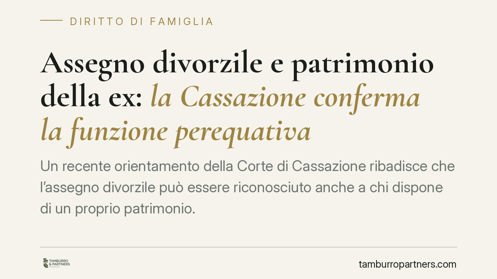

Assegno divorzile e patrimonio della ex: la Cassazione conferma la funzione perequativa
Un recente orientamento della Corte di Cassazione ribadisce che l'assegno divorzile può essere riconosciuto anche a chi dispone di un proprio patrimonio. A contare non è la mera autosufficienza, ma lo squilibrio economico tra gli ex coniugi e il contributo, anche non retribuito, dato alla vita familiare. Un principio che incide tanto su chi versa quanto su chi percepisce.

Il caso
La questione è ricorrente nelle aule di giustizia: la ex moglie è titolare di immobili e disponibilità finanziarie, eppure ottiene il riconoscimento dell'assegno divorzile. Il marito contesta la decisione sostenendo che, in presenza di un patrimonio personale, l'assegno non avrebbe ragion d'essere.
La Corte di Cassazione, in linea con il proprio orientamento consolidato, ha respinto questa impostazione. Il possesso di beni non esclude di per sé il diritto all'assegno quando permane una marcata disparità economica tra gli ex coniugi e quando uno dei due ha sacrificato aspettative professionali e reddituali a favore della famiglia.
Inquadramento normativo
Il riferimento è l'art. 5, comma 6, della Legge n. 898/1970 (legge sul divorzio). La norma attribuisce al giudice il potere di stabilire un assegno a favore dell'ex coniuge tenuto conto delle condizioni economiche delle parti, delle ragioni della decisione, del contributo personale ed economico dato da ciascuno alla conduzione familiare e alla formazione del patrimonio comune, nonché della durata del matrimonio.
La svolta interpretativa risale alle Sezioni Unite della Cassazione (sent. n. 18287/2018), che hanno superato il tradizionale criterio del "tenore di vita" goduto durante il matrimonio. Secondo questo indirizzo — poi ripreso da numerose pronunce successive — l'assegno divorzile ha natura composita: non solo assistenziale (garantire i mezzi adeguati a chi non ha autonomia economica), ma anche perequativa e compensativa. In altre parole, serve anche a riequilibrare una situazione in cui uno dei coniugi ha rinunciato a opportunità lavorative o reddituali per dedicarsi alla famiglia.
È qui che si colloca il nodo centrale: il giudice valorizza i sacrifici anche taciti, cioè quelle scelte non formalizzate ma concretamente operate — l'abbandono o la riduzione dell'attività lavorativa, la cura dei figli e della casa, il supporto alla carriera dell'altro coniuge. Scelte che, pur avendo arricchito il nucleo familiare, hanno impoverito le prospettive individuali di chi le ha compiute.
Implicazioni pratiche
La decisione produce effetti diversi a seconda della posizione.
Per chi percepisce l'assegno: disporre di un patrimonio non comporta automaticamente la perdita del diritto. Ciò che rileva è la dimostrazione dello squilibrio economico e del contributo dato alla famiglia, soprattutto se questo ha compresso le proprie capacità reddituali durante e dopo il matrimonio.
Per chi versa l'assegno: l'esistenza di beni in capo all'ex coniuge non è, da sola, un argomento risolutivo per ottenere la revoca o la riduzione. Occorre dimostrare l'assenza di un reale squilibrio, oppure la piena autosufficienza economica della controparte, intesa non come sopravvivenza ma come effettiva capacità di mantenere un'esistenza dignitosa e autonoma.
Va ribadito un punto essenziale: la valutazione è sempre caso per caso. Non esistono automatismi. Il giudice compie un apprezzamento complessivo che tiene conto di tutti i fattori indicati dalla norma, con la conseguenza che l'esito resta, in misura significativa, imprevedibile e strettamente legato alle circostanze concrete e alla documentazione prodotta.
Cosa fare in concreto
- È opportuno documentare con precisione la propria storia economica e professionale: redditi, interruzioni di carriera, scelte compiute a favore della famiglia.
- Conviene ricostruire la dinamica patrimoniale della coppia, distinguendo i beni personali da quelli frutto della vita in comune.
- La difesa andrebbe impostata non sul semplice dato del patrimonio, ma sulla presenza o assenza di un reale squilibrio economico tra le parti.
- In caso di istanza di modifica delle condizioni di divorzio, è utile verificare preventivamente la solidità degli elementi disponibili, poiché un'istanza mal costruita può produrre effetti opposti a quelli desiderati.
- Data l'imprevedibilità dell'esito, una valutazione tecnica preliminare del singolo caso è generalmente preferibile a soluzioni standardizzate.
---
Contributo informativo a cura di Tamburro & Partners Avvocati. Non costituisce parere legale.
Ogni famiglia ha il suo equilibrio.
Separazione, divorzio, affidamento, assegno: se vuoi un confronto riservato su una specifica situazione, scrivi allo studio. Ti rispondiamo entro un giorno lavorativo.